Pasporty slovenských měst: bez pasportu (nahoře, modře) a s pasportem (dole, červeně)
Řez zleva (A) doprava (B), ±10 m podél ulice, 10 px = 1 m. Silné čáry = okraje vozovky, tenké = ostatní hranice, žlutá = střed řezu, * = odhad. Ortofoto © GKÚ Bratislava, NLC (ZBGIS, CC BY 4.0).
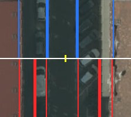
at1 · Strohgasse (wien)
bez FMZK: chodnik 4.85* · pruh_piktokoridor 5.1* · chodnik 6.15*
s FMZK: chodnik 2.6 · parkovani 2 · pruh_piktokoridor 5.37* · parkovani 3.63 · chodnik 2.15
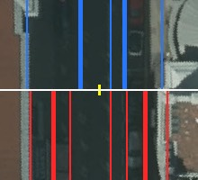
at2 · Walfischgasse (wien)
bez FMZK: chodnik 5.9* · pruh 3.4* · cyklopruh 1.5* · chodnik 4.2*
s FMZK: chodnik 2.5 · parkovani 1.95 · pruh 4.45* · cyklopruh 1.75* · parkovani 2 · chodnik 2.5
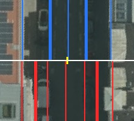
at3 · Theresianumgasse (wien)
bez FMZK: chodnik 4.5* · pruh 2.92* · pruh 2.92* · chodnik 4.1*
s FMZK: chodnik 2.2 · parkovani 2 · pruh 2.92* · pruh 3.1* · parkovani 2.02 · chodnik 2.65
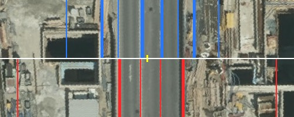
at4 · Friedrich-Schmidt-Platz (wien)
bez FMZK: chodnik 6* · pruh 2.87* · pruh 3.8* · krajnice 0.23* · delici 3.3* · pruh 2.77* · pruh 2.73* · chodnik 4.25*
s FMZK: plocha 17.32 · krajnice 3.62* · pruh 3.4* · pruh 3.78* · plocha 15.88
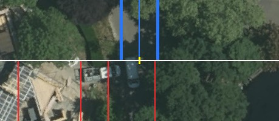
at7 · (bez názvu) (wien)
bez FMZK: pruh 3* · pruh 3*
s FMZK: cyklostezka 10.25 · zelen 4.55 · cyklostezka 7.65
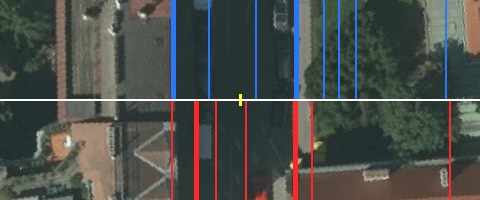
at8 · Große Pfarrgasse (wien)
bez FMZK: pruh 3.67* · pruh 4.7* · pruh 3.93* · chodnik 2.87* · stromorad 1.5* · chodnik 1.63* · stromorad 9*
s FMZK: chodnik 2.35 · parkovani 2 · pruh 3* · parkovani 4.9 · chodnik 1.75 · stromorad 13.75
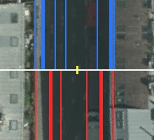
at13 · Glockengasse (wien)
bez FMZK: chodnik 1.05* · cyklopruh 1.77* · krajnice 1.58* · pruh_piktokoridor 4.5* · krajnice 1.85* · chodnik 0.55*
s FMZK: chodnik 2.1 · cyklopruh 1.5* · pruh_piktokoridor 3.75* · parkovani 2 · chodnik 1.8
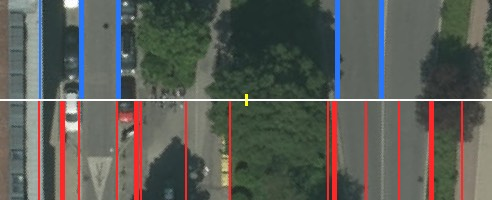
at17 · Obere Augartenstraße (wien)
bez FMZK: chodnik 4.05* · pruh 3.7* · zelen 21.9* · pruh 4.4*
s FMZK: chodnik 2.3 · parkovani 1.72 · pruh 3.8* · parkovani 1.93 · chodnik 0.5 · cyklostezka 4.43 · cyklostezka 4.43 · zelen 9.8 · chodnik 0.55 · pruh 3.25* · pruh 3.25* · pruh 3.25* · stromorad 3.05
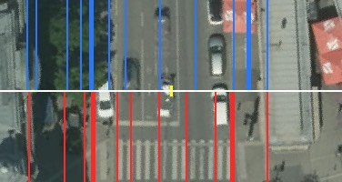
at21 · Landstraßer Hauptstraße (wien)
bez FMZK: zelen 1* · chodnik 3.39* · stromorad 1.5* · chodnik 1.11* · parkovani 2* · cyklopruh 1.75* · pruh 3.85* · pruh 3.85* · pruh 4.22* · parkovani 1.63* · chodnik 2.05*
s FMZK: chodnik 3.9 · stromorad 2.25 · chodnik 0.9 · parkovani 2.63 · cyklopruh 1.57* · pruh 3.02* · pruh 3.02* · pruh 3.19* · parkovani 1.83 · chodnik 3.9
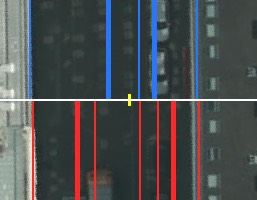
at22 · Zelinkagasse (wien)
bez FMZK: chodnik 7.75* · pruh 3.2* · cyklopruh 1.5* · chodnik 4.25*
s FMZK: chodnik 4.4 · krajnice 1.82* · pruh 4.5* · krajnice 1.82* · cyklopruh 1.5* · chodnik 2.6
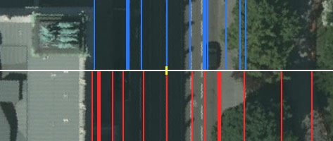
at24 · Rathausplatz (wien)
bez FMZK: chodnik 4.7* · parkovani 2* · tramvaj_v_pruhu 3.55* · tramvaj_v_pruhu 3.35* · parkovani 2* · chodnik 0.5* · nezname 2.55* · chodnik 2* · nezname 0.85*
s FMZK: chodnik 0.95 · parkovani 2* · cyklopruh 1.5* · pruh 2.94* · tramvaj_v_pruhu 3.21* · tramvaj_v_pruhu 3.65* · cyklopruh 1.75* · parkovani 2 · chodnik 3.6 · stromorad 5.35 · cyklostezka 4.25
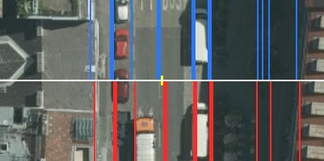
at34 · Burggasse (wien)
bez FMZK: chodnik 2.65* · parkovani 2.47* · pruh 3.3* · bus_cyklo 4.33* · parkovani 2* · chodnik 6* · plocha 0.55* · stromorad 0.85* · plocha 3.4*
s FMZK: chodnik 2.5 · parkovani 2.5 · pruh 3.7* · bus_cyklo 3.7* · parkovani 2* · chodnik 5.7 · stromorad 1.7 · chodnik 3.55